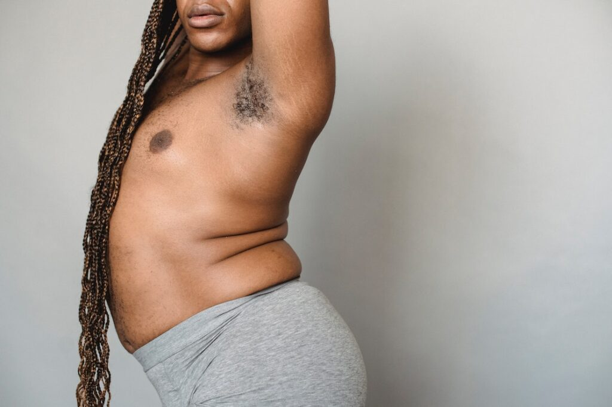

Gabriel Jesus Alves Borges
Também conhecido como: O Rei do Sono 😴
Gabriel é uma figura única: especialista em comer, dormir e reclamar (nessa ordem). Tem um talento incrível para evitar qualquer tarefa e ainda assim sair como herói.
Fatos curiosos sobre o Gabriel:
- 🐢 Corre menos que Wi-Fi ruim
- 🍝 Come como se fosse o último prato da vida
- 🎮 Ganha no videogame? Nunca. Mas dá desculpa como ninguém
- 🛏️ Top 1 no ranking nacional de sonecas
- 📱 Capaz de passar horas no celular sem piscar
🚨 ALERTA DE BARRIGUINHA 🚨
A barriga do Gabriel já é considerada patrimônio de família. Dizem que ela tem até CEP próprio.
Estudiosos afirmam que se ele encostar num travesseiro depois do almoço, é capaz de dormir 8 horas seguidas — só acorda se sentir cheiro de pizza.
Seu abdômen é conhecido como o "Tanquinho reverso": em vez de lavar roupa, dá vontade de colocar um cobertor e tirar uma soneca em cima.
Apesar das zoeiras, Gabriel é um irmão incrível, parceiro pra todas as horas e alguém que tem um coração gigante (do tamanho da barriga dele 😂).
Continue sendo você, doido e maravilhoso do jeito que é!